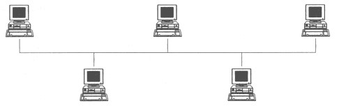
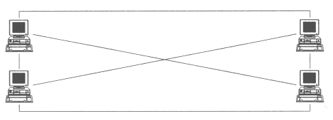
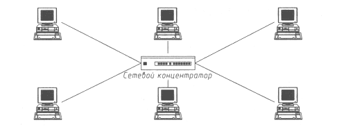

АТАКА НА INTERNET
Все объекты распределенной ВС взаимодействуют между собой по каналам связи. Ранее рассматривалась причина успеха удаленных атак, состоящая в использовании в РВС для связи между хостами широковещательной среды передачи, что означает подключение всех объектов РВС к одной общей шине (сетевая топология "общая шина", рис. 7.1). Это приводит к тому, что сообщение, адресованное только одному объекту системы, будет получено всеми ее объектами. Однако только тот объект, адрес которого указан в заголовке сообщения, будет считаться получателем. Очевидно, что в РВС с топологией "общая шина" на уровнях, начиная с сетевого и выше, необходимо использовать специальные методы идентификации объектов (см. далее раздел "Виртуальный канал связи"), так как идентификация на канальном уровне возможна только в случае использования сетевых криптокарт (что на сегодняшний день является экзотикой).

Рис. 7.1. Сетевая топология "общая шина"

Рис. 7.2. Сетевая топология "N объектов - N каналов"

Рис. 7.3. Сетевая топология "звезда"
Очевидно, что идеальным с точки зрения безопасности будет взаимодействие объектов РВС по выделенным каналам. Существуют два возможных способа организации топологии распределенной ВС с выделенными каналами. В первом случае каждый объект связывается физическими линиями связи со всеми объектами системы (рис. 7.2). Во втором случае в системе может использоваться сетевой коммутатор (switch), через который осуществляется связь между объектами (топология "звезда", рис. 7.3).
| Следует заметить, что в этом случае нарушается один из принципов построения Internet: сеть должна функционировать при выходе из строя любой ее части. |
Плюсы распределенной ВС с выделенными каналами связи между объектами состоят в следующем:
- передача сообщений осуществляется напрямую между источником и приемником, минуя остальные объекты системы. В такой системе при отсутствии доступа к объектам, через которые осуществляется передача сообщения, не существует программной возможности анализа сетевого трафика;
- имеется возможность идентифицировать объекты распределенной системы на канальном уровне по их адресам без использования специальных криптоалгоритмов шифрования трафика, поскольку система построена так, что по данному выделенному каналу осуществима связь только с одним определенным объектом. Появление в такой распределенной системе ложного объекта невозможно без аппаратного вмешательства (подключение дополнительного устройства к каналу связи);
- система с выделенными каналами связи - это система, в которой отсутствует неопределенность с информацией о ее объектах. Каждый объект в такой системе однозначно идентифицируется и обладает полной информацией о других объектах системы.
Но у РВС с выделенными каналами есть и минусы:
- сложность реализации и высокие затраты на создание системы;
- ограниченное число объектов системы (зависит от числа входов у коммутатора);
- сложность внесения в систему нового объекта.
Очевидно также, что создание глобальной РВС с выделенными каналами на сегодняшний день невозможно.
Анализируя плюсы и минусы использования выделенных каналов для построения защищенных систем взаимодействия объектов РВС, можно сделать вывод, что создание распределенных систем только с выделенными каналами или только с использованием широковещательной среды передачи неэффективно. Поэтому при построении распределенных вычислительных систем с разветвленной топологией и большим числом объектов представляется правильным использование комбинированных сетевых топологий для создания "гибких" распределенных систем. Чтобы обеспечить связь между объектами большой степени значимости, можно использовать выделенный канал. Связь менее значимых объектов системы может осуществляться с применением комбинации общей шины и выделенного канала.
Следует иметь в виду, что выбор безопасной топологии РВС является необходимым, но отнюдь не достаточным условием для создания защищенных систем связи между объектами распределенных ВС.
Итак, сформулируем первый принцип защищенного взаимодействия объектов РВС.
| Наилучшее с точки зрения безопасности взаимодействие объектов в распределенной ВС возможно только по физически выделенному каналу. |
| « | » |